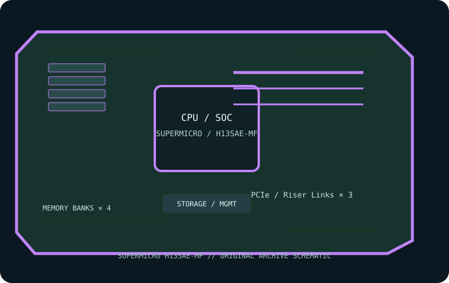

[ INDIVIDUAL COMPONENT // MOTHERBOARDS ]
Supermicro H13SAE-MF
Micro-ATX AM5 B650 workstation/server board for qualified AMD EPYC 4004/4005 and Ryzen desktop CPUs. This page records the exact printed model and revision policy with manufacturer references.

MODEL / REVISION: Exact model H13SAE-MF; confirm PCB revision and assembly code on the board before applying BIOS/BMC firmware.
Specifications
| Exact model / revision | Supermicro H13SAE-MF — Exact model H13SAE-MF; confirm PCB revision and assembly code on the board before applying BIOS/BMC firmware. |
|---|---|
| CPU and socket | One AM5 socket; compatible AMD EPYC 4004/4005 or specified Ryzen 7000-series desktop processors subject to exact CPU support list and BIOS. Not an SP5 EPYC 9004 board. |
| Chipset / platform | AMD B650. |
| Board size | Micro-ATX, 244 × 244 mm (9.6 × 9.6 in). |
| Memory / ECC / registered | Four DDR5 ECC/non-ECC UDIMM slots; ECC operation depends on processor and ECC UDIMM support. No RDIMM. Maximum capacity and speed depend on CPU, BIOS and QVL. |
| PCIe / lanes | Two CPU-connected PCIe 5.0 x16-length slots with processor-dependent lane sharing plus one PCIe 4.0 x4 slot; consult manual and CPU lane table. |
| Storage | Two M.2 PCIe 5.0 x4 sockets and four SATA 6 Gb/s ports; verify M.2 position and sharing in the manual. |
| Networking / BMC | Two 1GbE host LAN ports plus dedicated BMC management Ethernet; ASPEED AST2600 supports IPMI remote management. |
| Firmware / compatibility | Check board CPU list before treating EPYC 4004/4005 or Ryzen CPU compatibility as interchangeable; socket family alone is insufficient. Use qualified ECC UDIMM and the documented channel order. Match BIOS and BMC firmware to H13SAE-MF and board revision. |
Compatibility and revision notes
Check board CPU list before treating EPYC 4004/4005 or Ryzen CPU compatibility as interchangeable; socket family alone is insufficient. Use qualified ECC UDIMM and the documented channel order. Match BIOS and BMC firmware to H13SAE-MF and board revision.
Before installation, verify the physical revision and assembly label, CPU support list and minimum BIOS; confirm the exact memory type (UDIMM versus registered DIMM), channel population, chassis form factor, PCIe lane routing and storage connector modes against the linked vendor manual. A mechanically compatible socket does not guarantee CPU, firmware, ECC or lane compatibility.
Preservation and service
Record BIOS and BMC versions, serial and MAC labels, installed processors and DIMM part numbers, risers/cables, and test conditions. Use ESD-safe handling, correct socket procedure and chassis airflow. Do not cross-flash firmware from a similarly named board or revision.
Sources & further reading
- Supermicro — H13SAE-MF product specificationsManufacturer reference for the exact board model; use its support/QVL/manual details to verify population and compatibility.
- Supermicro — H13SAE-MF user manual (PDF)Manufacturer reference for the exact board model; use its support/QVL/manual details to verify population and compatibility.
Manufacturer model-specific references take precedence. Recheck CPU support, QVL, lane tables and current firmware for the printed board revision before service.